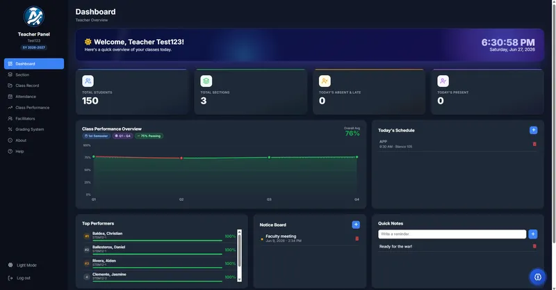

Web App
Live
Teacher Management Portal
An AI-powered dashboard for educators at PHINMA University of Iloilo that streamlines classroom management, student performance analytics, and module tracking with real-time data sync.
FastAPIPostgreSQLReactNext.js